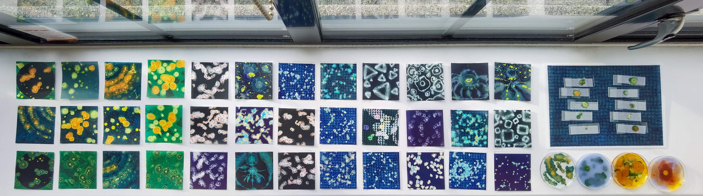
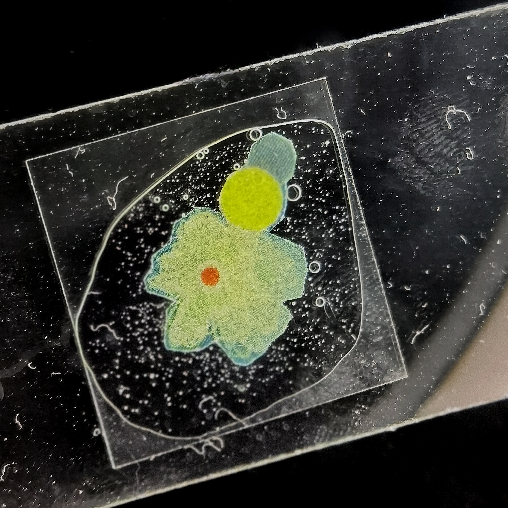
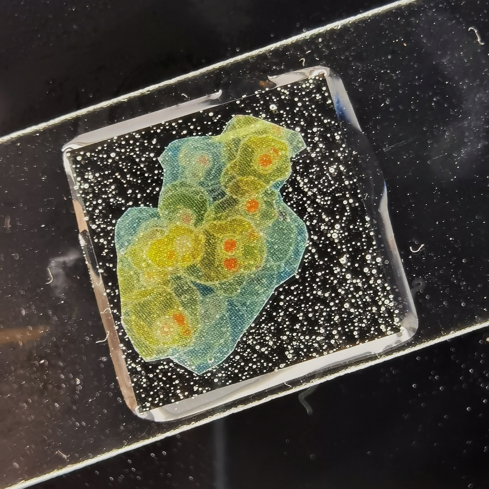
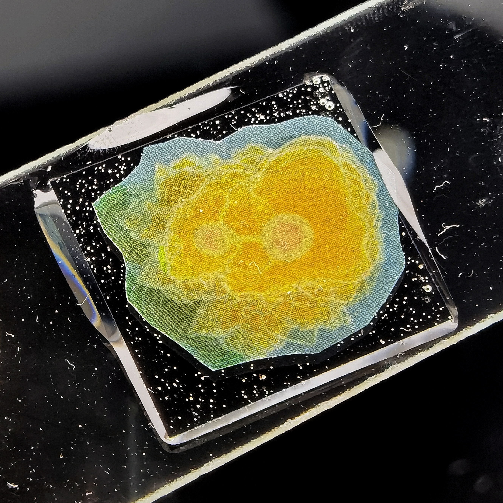
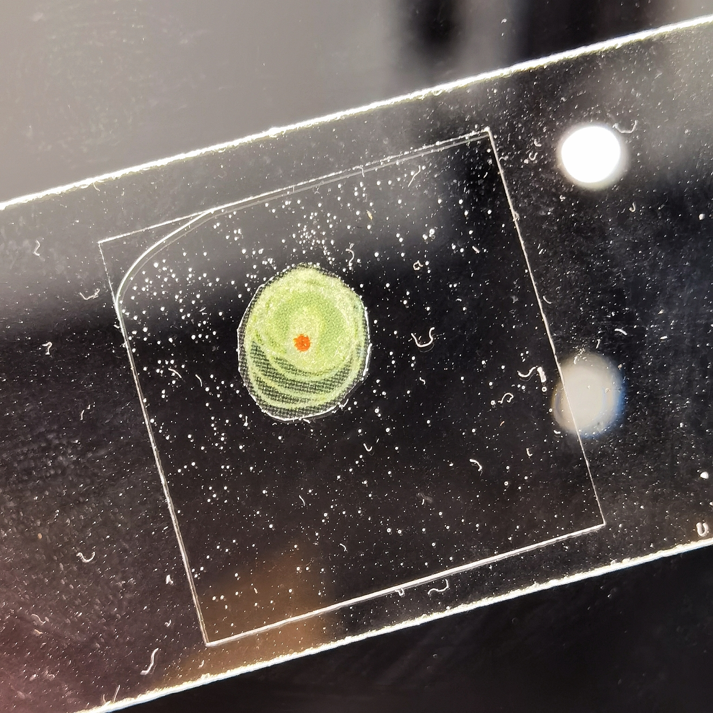
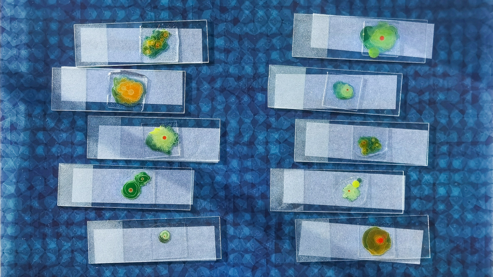

<!DOCTYPE html>
<html>

<head>
    <meta charset="UTF-8">

    <!-- meta viewport tag needed to make site responsive on mobile devices https://developer.mozilla.org/en-US/docs/Web/HTML/Viewport_meta_tag -->
    <meta name="viewport" content="width=device-width, initial-scale=1" />
    <link rel="icon" href="../assets/images/favicon.png" type="image/png">
    <title>Virtual Biome - Amoebas</title>

    <link rel="stylesheet" href="../css/page.css">
    <link rel="stylesheet" href="../css/flex-items.css">
    <link rel="stylesheet" href="../css/meida-Queries.css">
    <link rel="stylesheet" href="../css/nav.css">
    <link rel="stylesheet" href="../css/p5.css">
    <style>
        body {
            overflow-x: hidden;
        }
    </style>
</head>

<body>
    <main>
        <!-- if you have sub-pages think about adding a simple back button -->
        <div class="backgroundAmoebas"></div>
        <div class="overlay-Amoebas"></div>
        <div class="nav">
            <ul class="navlist">
                <li class="btli"><a href="../index.html">HOME</a></li>
                <li class="btli"><a href="../computationalArtist/computationalArt.html">COMPUTATIONAL ARTS</a></li>
                <li class="btli"><a href="../Illustrations/gallery.html">IllUSTRATIONS</a></li>
                <li class="btli"><a href="../gameDev/gamedevelopment.html">GAME DEV</a>
                    <ul class="droplist">
                        <li><a href="https://huichuan-wang.itch.io/">Itch.io</a></li>
                    </ul>
                </li>
                <li class="btli"><a href="../graphicDesign/graphicDesign.html">GRAPHICS</a></li>
                <!-- <li class="btli"><a href="../exhibitions/enhibitions.html">EXHIBITIONS</a></li> -->
                <li class="btli"><a href="../about/aboutMe.html">INFO</a>
                    <ul class="droplist">
                        <li><a href="https://www.instagram.com/huichuan_/ ">Instagram</a></li>
                        <li><a href="https://www.xiaohongshu.com/user/profile/60a0abc50000000001002142?xhsshare=CopyLink&appuid=60a0abc50000000001002142&apptime=1707347193 ">Xiaohongshu/Red</a></li>
                        <li><a href="https://www.linkedin.com/in/huichuan-ekawa ">Linkedin</a></li>
                    </ul>
                </li>
            </ul>
        </div>
        <div class="page-container">
            <section>
                <h1>Virtual Biome:
                    Exploring The Definition of Life, Self-Organization, and Artificial Intervention<br><br></h1>
                <h3>Creative coding web minigame, Printings, Essay
                    <br>Jan 2023 - April 2023<br><br>
                </h3>
                <a href="https://drive.google.com/file/d/1sw28UJTq5MncoXXCEBvMkSZWZbpTgVLa/view?usp=sharing ">
                    <div class="background"></div>
                    <h4 style="color:yellow;">Click here to read the essay</h4>
                </a>
            </section>

            <section>
                <div class="responsive-video centered-content">
                    <!-- <iframe title="vimeo-player" src="https://player.vimeo.com/video/644036051?h=b260a3b1b0" width="100%" height="100%" frameborder="0" allowfullscreen></iframe> -->
                    <iframe
                        src="https://player.vimeo.com/video/822992079?h=2678e1a68b&amp;badge=0&amp;autopause=0&amp;player_id=0&amp;app_id=58479"
                        frameborder="0" allow="autoplay; fullscreen; picture-in-picture" allowfullscreen
                        style="position:absolute;top:0;left:0;width:100%;height:100%;"
                        title="Amoebas web game"></iframe>
                    <script src="https://player.vimeo.com/api/player.js"></script>
                </div>

                <a href="https://huichuan1999.github.io/Theory-VirtualCreatures/ " class="Amoebas">
                    <h4 style=color:azure;>Click here to play: Amoebas-with text and more web interaction<br><br></h4>
                </a>
            </section>
            <section>
                <div class="responsive-video centered-content">
                    <!-- <iframe title="vimeo-player" src="https://player.vimeo.com/video/644036051?h=b260a3b1b0" width="100%" height="100%" frameborder="0" allowfullscreen></iframe> -->
                    <iframe
                        src="https://player.vimeo.com/video/822976979?h=2678e1a68b&amp;badge=0&amp;autopause=0&amp;player_id=0&amp;app_id=58479"
                        frameborder="0" allow="autoplay; fullscreen; picture-in-picture" allowfullscreen
                        style="position:absolute;top:0;left:0;width:100%;height:100%;"
                        title="Amoebas web game"></iframe>
                    <script src="https://player.vimeo.com/api/player.js"></script>
                </div>

                <a href="https://huichuan1999.github.io/Amoebas-HTML/" class="Amoebas">
                    <h4 style=color:azure;>Click here to play: Amoebas, pure web mini game<br><br></h4>
                </a>
            </section>

            <p>Using Object-Oriented Programming (OOP), p5.js, and HTML languages, I created
                virtual amoebas with individual differences and responses to external stimuli.
                The addition of dynamic Perlin noise, random crawling trajectories and sound
                input imbues these simple shapes with lifelike qualities, stretching the
                definition of "creature" and exploring the boundaries between life and artificial
                constructs. As if experiencing a biological stress response, they tend to
                communicate with each other by changing color and connect by a line when in
                proximity, like exchanging pheromones. If user clicking on the screen, yellow
                dots generate as food, the amoebas would moving towards them, consuming them,
                and get bigger. The interface provides buttons to let human clear food, add
                creatures, kill them, or restart the life game. Codes looming on the screen
                reveal the inner nature of these virtual creatures.
            </p>
            <p>Witnessing these virtual amoebas, which possess primitive structures and simple logic of activity,
                yet can develop intricate and splendid forms and efficiently transmitting "nutrients" or
                "pheromones," challenges human arrogance in assuming superiority and invites us to reconsider
                the definition of life. Drawing inspiration from post-humanist and "decentering humanity"
                approaches, this article seeks to demonstrate the creative endeavor, concomitantly the theoretical
                background and philosophical inspiration behind my project’s materialization. In a more tangible
                sense, these work will primarily focus on the examination of boundaries between organic and
                inorganic entities, the emergence of self-organization, and the potential implications of human
                involvement in the creation of artificial life forms. Finally, this work also tries to demonstrate
                the rationale of my practical process.
            </p>

            <h3>Process</h3>
            <div class="responsive-video centered-content">
                <!-- <iframe title="vimeo-player" src="https://player.vimeo.com/video/644036051?h=b260a3b1b0" width="100%" height="100%" frameborder="0" allowfullscreen></iframe> -->
                <iframe
                    src="https://player.vimeo.com/video/789321664?h=2678e1a68b&amp;badge=0&amp;autopause=0&amp;player_id=0&amp;app_id=58479"
                    frameborder="0" allow="autoplay; fullscreen; picture-in-picture" allowfullscreen
                    style="position:absolute;top:0;left:0;width:100%;height:100%;"
                    title="Amoebas web game"></iframe>
                <script src="https://player.vimeo.com/api/player.js"></script>
            </div>
            <p>Another version of Amoebas, use Openframeworks(written in C++ language)<br><br></p>

            <h3>Printings<br><br></h3>
            
            <br><br>
            <div class="flex-container flex-basis-forth">
                <div class="flex-item">
                    
                </div>
                <div class="flex-item">
                    
                </div>
                <div class="flex-item">
                    
                </div>
                <div class="flex-item">
                    
                </div>
            </div>
            <br><br>
            
            <br><br>
            
            <br><br>
            <h3>Reflection and Conclution</h3>
            <p>
                Several new thought-provoking questions emerge: Does the
                created amoeba cluster possess any form of subjective consciousness? Are these virtual life forms
                merely “illusions” generated by computer algorithms and random numbers?<br><br>
                From the perspective of "things," these virtual creatures may appear passive, merely accepting their
                programmed interactions and states. However, as these interactions and states grow increasingly
                complex, how do we define the concepts of "life" and "death"? And as we write programs to create
                these virtual entities, does the “mind” live in our own brain follow a similar set of
                processes?<br><br>
                In conclusion, These questions serve as a reminder that our understanding of life, consciousness,
                and the boundaries between the organic and inorganic world continues to evolve. I will, as always,
                keep an open mind and continue to explore in the field of biology and life.</p>


            <section>
                <h3<br><br>References</h3>
                    <p>
                        Shiffman, D. (n.d.). p5.js Web Editor. [online] editor.p5js.org. Available at:
                        https://editor.p5js.org/codingtrain/sketches/sy1p1vnQn [Accessed 1 May 2023]
                        <br><br>p5js.org. (n.d.). examples | p5.js. [online] Available at:
                        https://p5js.org/zhHans/examples/simulate-particles.html [Accessed 1 May 2023].
                        <br><br>Shhiffman, D. (2009). The Nature of Code. [online] Natureofcode.com. Available at:
                        https://natureofcode.com/book/chapter-9-the-evolution-of-code/.

                        <br><br>Wiener, N. (2013). Cybernetics or control and communication in the animal and the
                        machine.
                        Mansfield Centre, Ct: Martino.
                        <br><br>Bennett, J. (2009). Vibrant Matter A Political Ecology of Things. Duke University Press.

                        <br><br>Langton, C.G. and Katsunori Shimohara (1997). Artificial life V : proceedings of the
                        Fifth
                        International Workshop on the Synthesis and Simulation of Living Systems. Cambridge, Mass.: Mit
                        Press.

                        <br><br>Slava Gerovitch (2004). From newspeak to cyberspeak : a history of soviet cybernetics.
                        Cambridge,
                        Mass.: Mit Press.
                    </p>
            </section>
            <button id="return-to-top" class="return-to-top">▲ back<br>to top</button>
            <script src="../JavaScripts/interactions/return_to_top.js"></script>
        </div>
    </main>
</body>

</html>